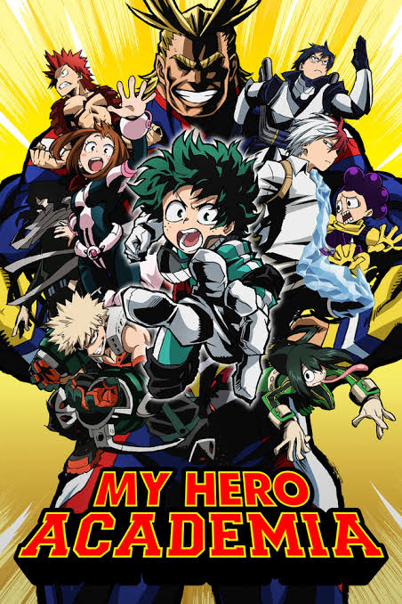
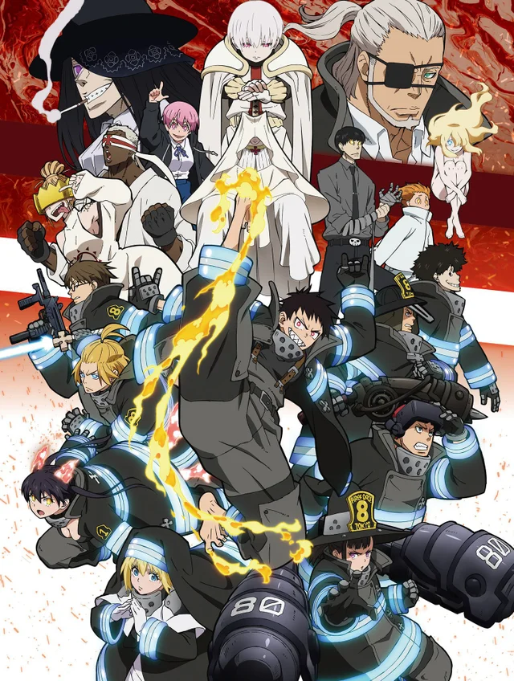
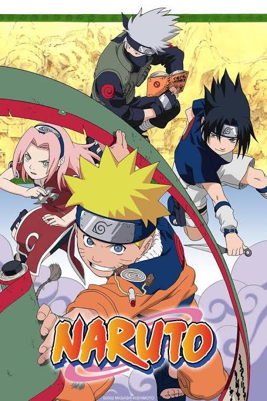

A young woman named Eun Gee awakens from a coma to discover that a zombie outbreak has taken over the island nation she calls home.
Poisoned, suffocated, died from a fall, crushed, starved I accepted death until my 117th life, I become the killer.
Beneath the glamorous exterior of a powerful king lurks the shell of man, devoid of purpose and will.
The fourth Prince who willingly took a path that contradicted to the fixed fate, participated in a contest held for the throne to become an immortal god.
Her ability to detect lies has made her an outstanding officer of the law – despite being haunted by her inability to save the ones she loved from a gruesome fate many years ago
After an accident, a modern-day college student awakens as the story's villainess, Melissa Foddebrat

The story follows a boy who was born without a Quirk but still dreams of becoming a superhero himself.

Shinra Kusakabe is a third generation pyrokinetic youth who gained the nickname "Devil's Footprints" for his ability to ignite his feet at will, and was ostracized as a child for the fire that killed his mother and younger brother Sho twelve years ago

Guided by the spirit demon within him, orphaned Naruto learns to harness his powers as a ninja